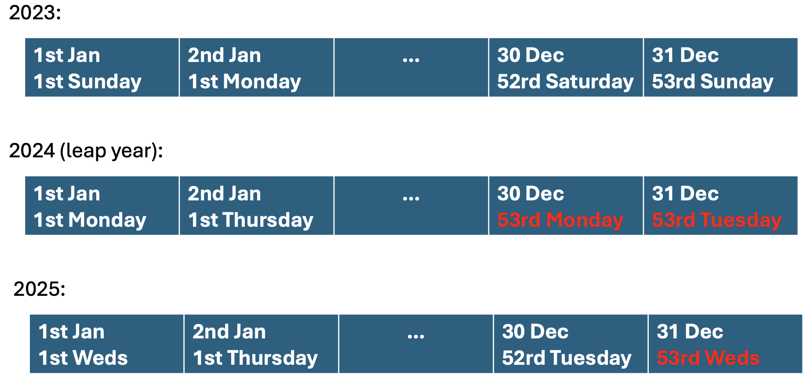
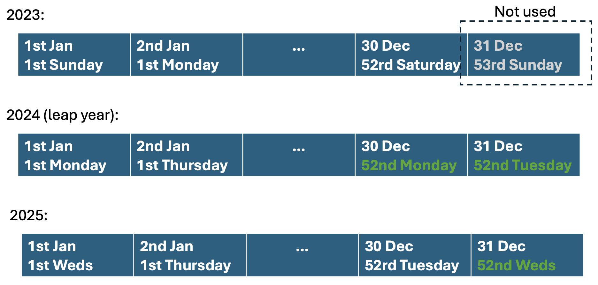

When adapting time series data to new date ranges with
adapt_timeseries(), we sometimes encounter gaps in the
output where no historical data is available to fill in. This vignette
explains why these gaps occur and how we handle them.
How adapt_timeseries() works
This function adapts the date range of a time series by reusing historical patterns based on the same weekday occurrence within the year and decimal hour of the day. For example, if we have 2023 data and we want to fill in data for 01/01/2025 02:30, we see that it’s the first Thursday of 2025, so we use the observation from 2.5 hours on the first Thursday of 2023.
In summary, the adapt_timeseries() function consists in
two main actions:
-
Check the input series. The function looks for
missing values in every column after
datetime. If there areNAvalues andfill_gaps = FALSEit stops early with an informative error; otherwise it callsfill_from_past()so the input itself has no gaps. -
Adapt date range For every pair of
ywday()(weekday occurrence within the year) anddhours()(decimal hour) the function grabs the most recent observation and copies it into missing rows with the same pair.
The full-year problem
This pipeline works well until we cross years with a different number
of weekdays. In the example below we see that 2023 has 52 Mondays and
Tuesdays, while 2024 (a leap year) has 53 of each. This means that we
can’t find historical data for the “53rd Monday” or “53rd Tuesday” of
2024, because they simply do not exist in 2023, so the output keeps
NA.

To cover those extra weekdays we use a second step: whenever the join
fails but the missing data is limited to at most two consecutive days
(to cover leap years), we call fill_from_past() and copy
the most recent observation for the same clock time one week earlier.
This reaches back to the “52nd Monday/Tuesday” that does exit, which
fills the previously empty rows.

This provides stable results across leap years without inventing new patterns that never existed in the input.
Guard rails when we do not have enough history
If we try to extrapolate further — say we only have a single month of
data and request an entire year — the number of missing days is greater
than two. In that case we deliberately avoid
fill_from_past() and emit a warning so that users can fetch
more data instead of silently manufacturing values.
short_month <- timefully::dtf |> filter(month(datetime) == 4)
new_range <- adapt_timeseries(
short_month,
start_date = as.Date("2025-04-15"),
end_date = as.Date("2025-05-15"),
tzone = "Europe/Paris",
fill_gaps = FALSE
)
new_range |>
filter(month(datetime) == 5)
#> # A tibble: 1,440 × 3
#> datetime solar building
#> <dttm> <dbl> <dbl>
#> 1 2025-05-01 00:00:00 NA NA
#> 2 2025-05-01 00:15:00 NA NA
#> 3 2025-05-01 00:30:00 NA NA
#> 4 2025-05-01 00:45:00 NA NA
#> 5 2025-05-01 01:00:00 NA NA
#> 6 2025-05-01 01:15:00 NA NA
#> 7 2025-05-01 01:30:00 NA NA
#> 8 2025-05-01 01:45:00 NA NA
#> 9 2025-05-01 02:00:00 NA NA
#> 10 2025-05-01 02:15:00 NA NA
#> # ℹ 1,430 more rowsWith these safeguards in place we get the best of both worlds: automatic repairs for the full-year edge case, and clear feedback when the input is simply too small to support the requested period.